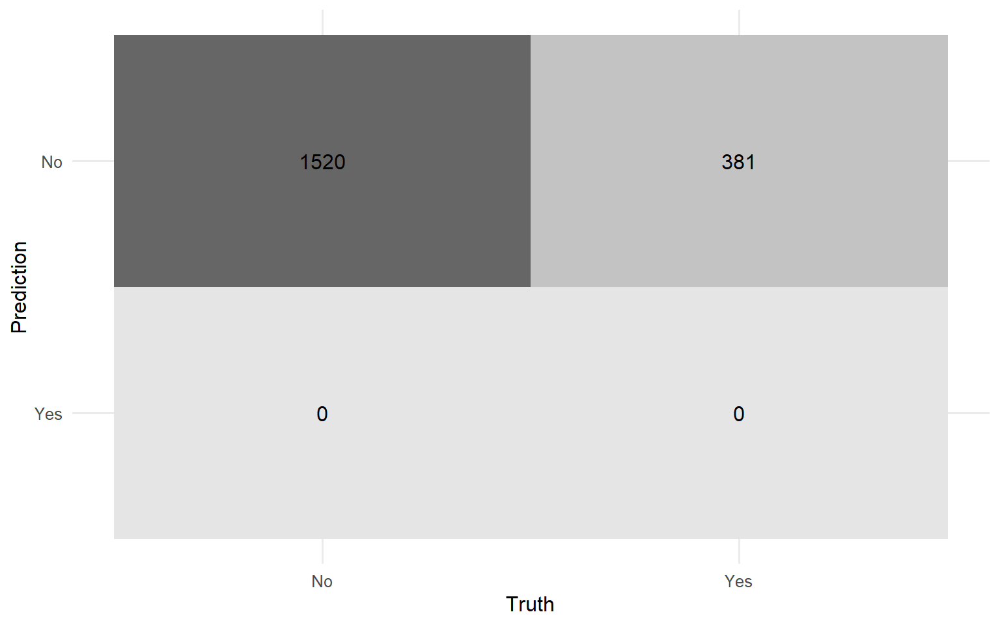
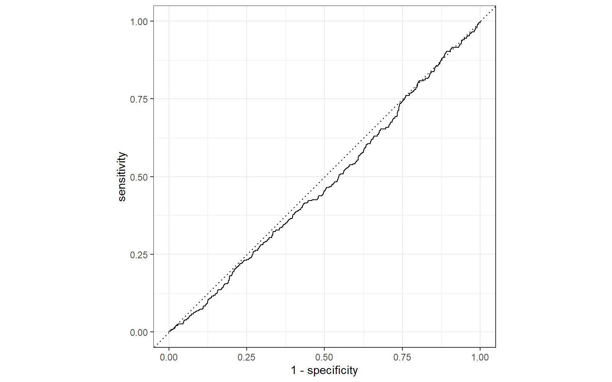

Code
library(tidyverse)
library(tidymodels)
library(ranger)
theme_set(theme_minimal(base_size = 12))Can patient health data, such as blood pressure, cholesterol, BMI, smoking status, exercise habits, and 15 other features, predict whether someone has heart disease?
Data: Heart Disease Risk dataset (10,000 patient records, 21 columns, binary target Heart Disease Status).
Two models are compared using an identical preprocessing pipeline, for a fair comparison:
glm): a linear baselineranger, 500 trees): can capture non-linear patterns and feature interactions that logistic regression structurally cannotlibrary(tidyverse)
library(tidymodels)
library(ranger)
theme_set(theme_minimal(base_size = 12))heart <- read_csv("data/heart_disease.csv", show_col_types = FALSE)
glimpse(heart)Rows: 10,000
Columns: 21
$ Age <dbl> 56, 69, 46, 32, 60, 25, 78, 38, 56, 75, 36, 40,…
$ Gender <chr> "Male", "Female", "Male", "Female", "Male", "Ma…
$ `Blood Pressure` <dbl> 153, 146, 126, 122, 166, 152, 121, 161, 135, 14…
$ `Cholesterol Level` <dbl> 155, 286, 216, 293, 242, 257, 175, 187, 291, 25…
$ `Exercise Habits` <chr> "High", "High", "Low", "High", "Low", "Low", "H…
$ Smoking <chr> "Yes", "No", "No", "Yes", "Yes", "Yes", "Yes", …
$ `Family Heart Disease` <chr> "Yes", "Yes", "No", "Yes", "Yes", "No", "Yes", …
$ Diabetes <chr> "No", "Yes", "No", "No", "Yes", "No", "Yes", "Y…
$ BMI <dbl> 24.99159, 25.22180, 29.85545, 24.13048, 20.4862…
$ `High Blood Pressure` <chr> "Yes", "No", "No", "Yes", "Yes", "No", "No", "N…
$ `Low HDL Cholesterol` <chr> "Yes", "Yes", "Yes", "No", "No", "No", "Yes", "…
$ `High LDL Cholesterol` <chr> "No", "No", "Yes", "Yes", "No", "No", "No", "No…
$ `Alcohol Consumption` <chr> "High", "Medium", "Low", "Low", "Low", "Low", "…
$ `Stress Level` <chr> "Medium", "High", "Low", "High", "High", "Mediu…
$ `Sleep Hours` <dbl> 7.633228, 8.744034, 4.440440, 5.249405, 7.03097…
$ `Sugar Consumption` <chr> "Medium", "Medium", "Low", "High", "High", "Low…
$ `Triglyceride Level` <dbl> 342, 133, 393, 293, 263, 126, 107, 228, 317, 19…
$ `Fasting Blood Sugar` <dbl> NA, 157, 92, 94, 154, 91, 85, 111, 103, 96, NA,…
$ `CRP Level` <dbl> 12.96924569, 9.35538940, 12.70987253, 12.509046…
$ `Homocysteine Level` <dbl> 12.387250, 19.298875, 11.230926, 5.961958, 8.15…
$ `Heart Disease Status` <chr> "No", "No", "No", "No", "No", "No", "No", "No",…colSums(is.na(heart)) Age Gender Blood Pressure
29 19 19
Cholesterol Level Exercise Habits Smoking
30 25 25
Family Heart Disease Diabetes BMI
21 30 22
High Blood Pressure Low HDL Cholesterol High LDL Cholesterol
26 25 26
Alcohol Consumption Stress Level Sleep Hours
32 22 25
Sugar Consumption Triglyceride Level Fasting Blood Sugar
30 26 22
CRP Level Homocysteine Level Heart Disease Status
26 20 0 Every column has only light, scattered missingness (roughly 0.2–0.3% of rows each). With nothing standing out as a heavily-missing column, the simplest defensible approach is listwise deletion, drop any row with at least one missing value, rather than building per-column imputation logic that would add complexity without meaningfully changing the results.
heart_clean <- heart %>% drop_na()
nrow(heart)[1] 10000nrow(heart_clean)[1] 9500This drops about 5% of rows (10,000 → 9,500), a reasonable trade-off for guaranteeing a fully complete dataset.
heart_clean %>% count(`Heart Disease Status`) %>% mutate(pct = n / sum(n))# A tibble: 2 × 3
`Heart Disease Status` n pct
<chr> <int> <dbl>
1 No 7597 0.800
2 Yes 1903 0.200The target is imbalanced: ~80% No / ~20% Yes. This one fact drives several downstream decisions:
set.seed(42)
split <- initial_split(heart_clean, prop = 0.8, strata = `Heart Disease Status`)
train_data <- training(split)
test_data <- testing(split)
nrow(train_data)[1] 7599nrow(test_data)[1] 1901heart_recipe <- recipe(`Heart Disease Status` ~ ., data = train_data) %>%
step_dummy(all_nominal_predictors())
heart_recipeOne shared recipe feeds both models below, so any performance difference between them reflects the model, not inconsistent preprocessing.
log_reg_spec <- logistic_reg() %>%
set_engine("glm") %>%
set_mode("classification")
log_reg_workflow <- workflow() %>%
add_recipe(heart_recipe) %>%
add_model(log_reg_spec)
log_reg_fit <- fit(log_reg_workflow, data = train_data)
log_reg_fit══ Workflow [trained] ══════════════════════════════════════════════════════════
Preprocessor: Recipe
Model: logistic_reg()
── Preprocessor ────────────────────────────────────────────────────────────────
1 Recipe Step
• step_dummy()
── Model ───────────────────────────────────────────────────────────────────────
Call: stats::glm(formula = ..y ~ ., family = stats::binomial, data = data)
Coefficients:
(Intercept) Age
-8.312e-01 -1.371e-03
`Blood Pressure` `Cholesterol Level`
-3.517e-03 2.872e-04
BMI `Sleep Hours`
9.424e-03 -3.134e-03
`Triglyceride Level` `Fasting Blood Sugar`
-2.746e-05 -9.724e-04
`CRP Level` `Homocysteine Level`
-6.952e-03 2.457e-03
Gender_Male `Exercise Habits_Low`
-6.270e-02 2.572e-02
`Exercise Habits_Medium` Smoking_Yes
1.145e-02 4.076e-02
`Family Heart Disease_Yes` Diabetes_Yes
-9.418e-02 -1.384e-02
`High Blood Pressure_Yes` `Low HDL Cholesterol_Yes`
-1.015e-02 -1.242e-02
`High LDL Cholesterol_Yes` `Alcohol Consumption_Low`
6.144e-02 -4.708e-02
`Alcohol Consumption_Medium` `Alcohol Consumption_None`
-1.595e-01 -1.481e-01
`Stress Level_Low` `Stress Level_Medium`
-1.261e-01 1.406e-01
`Sugar Consumption_Low` `Sugar Consumption_Medium`
-1.817e-02 -5.027e-02
Degrees of Freedom: 7598 Total (i.e. Null); 7573 Residual
Null Deviance: 7611
Residual Deviance: 7574 AIC: 7626class_preds <- predict(log_reg_fit, new_data = test_data, type = "class")
prob_preds <- predict(log_reg_fit, new_data = test_data, type = "prob")
results <- test_data %>%
select(`Heart Disease Status`) %>%
mutate(`Heart Disease Status` = factor(`Heart Disease Status`, levels = c("No", "Yes"))) %>%
bind_cols(class_preds) %>%
bind_cols(prob_preds)conf_matrix <- conf_mat(results, truth = `Heart Disease Status`, estimate = .pred_class)
conf_matrix Truth
Prediction No Yes
No 1520 381
Yes 0 0autoplot(conf_matrix, type = "heatmap")
Note event_level = "second" below which tells yardstick to treat “Yes” as the positive class. Without it, yardstick defaults to the first factor level as “positive,” which silently computes sensitivity/specificity for the wrong class.
class_metrics <- metric_set(accuracy, sensitivity, specificity, precision)
class_metrics(results, truth = `Heart Disease Status`, estimate = .pred_class, event_level = "second")# A tibble: 4 × 3
.metric .estimator .estimate
<chr> <chr> <dbl>
1 accuracy binary 0.800
2 sensitivity binary 0
3 specificity binary 1
4 precision binary NA roc_curve_data <- roc_curve(results, truth = `Heart Disease Status`, .pred_Yes, event_level = "second")
autoplot(roc_curve_data)roc_auc(results, truth = `Heart Disease Status`, .pred_Yes, event_level = "second")# A tibble: 1 × 3
.metric .estimator .estimate
<chr> <chr> <dbl>
1 roc_auc binary 0.476rf_spec <- rand_forest(trees = 500) %>%
set_engine("ranger") %>%
set_mode("classification")
rf_workflow <- workflow() %>%
add_recipe(heart_recipe) %>%
add_model(rf_spec)
rf_fit <- fit(rf_workflow, data = train_data)
rf_fit══ Workflow [trained] ══════════════════════════════════════════════════════════
Preprocessor: Recipe
Model: rand_forest()
── Preprocessor ────────────────────────────────────────────────────────────────
1 Recipe Step
• step_dummy()
── Model ───────────────────────────────────────────────────────────────────────
Ranger result
Call:
ranger::ranger(x = maybe_data_frame(x), y = y, num.trees = ~500, num.threads = 1, verbose = FALSE, seed = sample.int(10^5, 1), probability = TRUE)
Type: Probability estimation
Number of trees: 500
Sample size: 7599
Number of independent variables: 25
Mtry: 5
Target node size: 10
Variable importance mode: none
Splitrule: gini
OOB prediction error (Brier s.): 0.1628915 rf_class_preds <- predict(rf_fit, new_data = test_data, type = "class")
rf_prob_preds <- predict(rf_fit, new_data = test_data, type = "prob")
rf_results <- test_data %>%
select(`Heart Disease Status`) %>%
mutate(`Heart Disease Status` = factor(`Heart Disease Status`, levels = c("No", "Yes"))) %>%
bind_cols(rf_class_preds) %>%
bind_cols(rf_prob_preds)rf_conf_matrix <- conf_mat(rf_results, truth = `Heart Disease Status`, estimate = .pred_class)
rf_conf_matrix Truth
Prediction No Yes
No 1520 381
Yes 0 0autoplot(rf_conf_matrix, type = "heatmap")
class_metrics(rf_results, truth = `Heart Disease Status`, estimate = .pred_class, event_level = "second")# A tibble: 4 × 3
.metric .estimator .estimate
<chr> <chr> <dbl>
1 accuracy binary 0.800
2 sensitivity binary 0
3 specificity binary 1
4 precision binary NA rf_roc_data <- roc_curve(rf_results, truth = `Heart Disease Status`, .pred_Yes, event_level = "second")
autoplot(rf_roc_data)
roc_auc(rf_results, truth = `Heart Disease Status`, .pred_Yes, event_level = "second")# A tibble: 1 × 3
.metric .estimator .estimate
<chr> <chr> <dbl>
1 roc_auc binary 0.477model_comparison <- bind_rows(
class_metrics(results, truth = `Heart Disease Status`, estimate = .pred_class, event_level = "second") %>%
mutate(model = "Logistic Regression"),
class_metrics(rf_results, truth = `Heart Disease Status`, estimate = .pred_class, event_level = "second") %>%
mutate(model = "Random Forest")
) %>%
bind_rows(
roc_auc(results, truth = `Heart Disease Status`, .pred_Yes, event_level = "second") %>% mutate(model = "Logistic Regression"),
roc_auc(rf_results, truth = `Heart Disease Status`, .pred_Yes, event_level = "second") %>% mutate(model = "Random Forest")
) %>%
select(model, .metric, .estimate) %>%
pivot_wider(names_from = .metric, values_from = .estimate)
model_comparison# A tibble: 2 × 6
model accuracy sensitivity specificity precision roc_auc
<chr> <dbl> <dbl> <dbl> <dbl> <dbl>
1 Logistic Regression 0.800 0 1 NA 0.476
2 Random Forest 0.800 0 1 NA 0.477Both models converge on the same result:
| Metric | Logistic Regression | Random Forest |
|---|---|---|
| Accuracy | 0.800 | 0.800 |
| Sensitivity | 0.000 | 0.000 |
| Specificity | 1.000 | 1.000 |
| Precision | NA (no positive predictions made) | NA (no positive predictions made) |
| ROC AUC | 0.476 | 0.477 |
Headline finding: neither model found usable signal in these features. Both an AUC of ~0.48 (versus 0.5 for a coin flip) and a confusion matrix where every single test-set prediction was “No” point to the same conclusion that at the default 50% classification threshold, the model has learned that predicting the majority class is the safest bet, because none of the 20 predictors (age, blood pressure, cholesterol, smoking, exercise habits, etc.) are informative enough on their own to justify ever predicting “Yes.”
This is not a coding error or a modeling mistake and it’s confirmed by two structurally different model types landing on the same result. Logistic regression can only detect linear relationships; random forest can detect non-linear patterns and feature interactions. Agreement between them is stronger evidence of “no signal in the data” than either model failing alone would be.
Why this matters for interpreting the dataset: datasets like this are sometimes synthetically generated for practice purposes, which can mean the relationship between features and outcome is intentionally weak or randomized rather than reflecting real clinical patterns. Reporting a null result clearly rather than tuning parameters until a misleadingly optimistic number appears is the more defensible, more useful analysis.
What I’d try next: - Lower the classification threshold well below 50% (e.g. flag “Yes” at >20% predicted probability) to explore the sensitivity/specificity tradeoff directly, even though it won’t change the underlying AUC. - Check feature-target correlations individually before modeling, to catch a signal-free dataset earlier in the process. - If treating this as a real screening tool, prioritize collecting features with known clinical predictive value (family history detail, actual lab panels, prior cardiac events) over adding more model complexity.
Data source: Heart Disease Risk dataset, Kaggle.